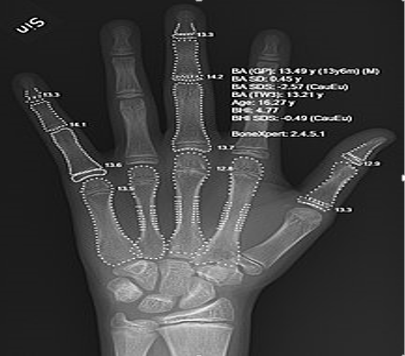

artificial intelligence
Healthcare

AI in healthcare is often used for classification, whether to automate initial evaluation of a CT scan or EKG or to identify high-risk patients for population health. The breadth of applications is rapidly increasing. As an example, AI is being applied to the high-cost problem of dosage issues—where findings suggested that AI could save $16 billion. In 2016, a groundbreaking study in California found that a mathematical formula developed with the help of AI correctly determined the accurate dose of immunosuppressant drugs to give to organ patients.
X-ray of a hand, with automatic calculation of bone age by computer software
Artificial intelligence is assisting doctors.
According to Bloomberg Technology, Microsoft has developed AI to help doctors find the right treatments for cancer. There is a great amount of research and drugs developed relating to cancer. In detail, there are more than 800 medicines and vaccines to treat cancer. This negatively affects the doctors, because there are too many options to choose from, making it more difficult to choose the right drugs for the patients. Microsoft is working on a project to develop a machine called "Hanover". Its goal is to memorize all the papers necessary to cancer and help predict which combinations of drugs will be most effective for each patient. One project that is being worked on at the moment is fighting myeloid leukemia, a fatal cancer where the treatment has not improved in decades. Another study was reported to have found that artificial intelligence was as good as trained doctors in identifying skin cancers. Another study is using artificial intelligence to try to monitor multiple high-risk patients, and this is done by asking each patient numerous questions based on data acquired from live doctor to patient interactions. One study was done with transfer learning; the machine performed a diagnosis similarly to a well-trained ophthalmologist, and could generate a decision within 30 seconds on whether or not the patient should be referred for treatment, with more than 95% accuracy.
According to CNN, a recent study by surgeons at the Children's National Medical Center in Washington successfully demonstrated surgery with an autonomous robot.
The team supervised the robot while it performed soft-tissue surgery, stitching together a pig's bowel during open surgery, and doing so better than a human surgeon, the team claimed. IBM has created its own artificial intelligence computer, the IBM Watson, which has beaten human intelligence (at some levels). Watson has struggled to achieve success and adoption in healthcare
According to CNN, a recent study by surgeons at the Children's National Medical Center in Washington successfully demonstrated surgery with an autonomous robot. The team supervised the robot while it performed soft-tissue surgery, stitching together a pig's bowel during open surgery, and doing so better than a human surgeon, the team claimed. IBM has created its own artificial intelligence computer, the IBM Watson, which has beaten human intelligence (at some levels). Watson has struggled to achieve success and adoption in healthcare